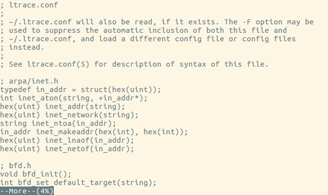

Linux文件内容查阅主要使用以下命令：
cat：由第一行开始显示文件内容。
tac：从最后一行开始显示，可以看出 tac 是 cat 的倒着写。
nl：显示的时候，顺道输出行号。
more：一页一页的显示文件内容。
less：与 more 类似，但是比 more 更好的是，他可以往前翻页。
head：只看头几行。
tail：只看尾巴几行。
od：以二进制的方式读取文件内容。
直接检视文件内容
cat：
cat 是 Concatenate (连续) 的简写，主要的功能是将一个文件的内容连续的印出在屏幕上面。
语法：
1 | cat [-AbEnTv] |
示例：
使用cat命令查阅/etc/legal文件内容，并加上行号：
1 | root@ubuntu:~# cat -n /etc/legal |
tac（反向列示）：
tac 刚好是将 cat 反写过来，所以他的功能就跟 cat 相反。cat 是由第一行到最后一行连续显示在屏幕上，而 tac 则是由最后一行到第一行反向在屏幕上显示出来。
使用tac命令查阅/etc/legal文件内容：
1 | root@ubuntu:~# tac /etc/legal |
nl（添加行号打印）：
nl可以将输出的文件内容自动的加上行号。其预设的结果与cat -n有点不太一样， nl可以将行号做比较多的显示设计，包括位数与是否自动补齐 0 等等的功能。
语法：
1 | nl [-bnw] 文件 |
示例：
使用nl显示/etc/legal文件内容：
1 | root@ubuntu:~# nl /etc/legal |
可见，空行并没有显示行号，可以使用-b a选项显示空行行号：
1 | root@ubuntu:~# nl -b a /etc/legal |
可翻页查阅
当文件内容较多的时候，可以使用more和less命令来翻页显示文件内容。
more：
使用more查阅/etc/ltrace.conf，页面最后一行会显示出目前显示的百分比：

还可以在最后一行输入一些有用的指令：
1 | 空格键 (space)：代表向下翻一页； |
less：
less 的用法比起 more 又更加的有弹性，less可用的指令有： bash 空格键 ：向下翻动一页； [pagedown]：向下翻动一页； [pageup] ：向上翻动一页； /字符串 ：向下搜寻『字符串』的功能； ?字符串 ：向上搜寻『字符串』的功能； n ：重复前一个搜寻 (与 / 或 ? 有关) N ：反向的重复前一个搜寻 (与 / 或 ? 有关) g ：前进到这个资料的第一行去； G ：前进到这个数据的最后一行去 (注意大小写)； q ：离开 less 这个程序。
1 | ## 以行为单位查阅 |
示例：
1 | #使用head指令查阅/etc/ltrace.conf，默认输出前10行 |
如果数字是负数的话，如使用指令head -n -100 /etc/file 则表示输出file文件去除后100行后的所有行。即如果file文件有150行，使用该指令后，只会输出前50行。
tail（取出后面几行）：
语法：
1 | tail [-n number] 文件 |
如果要查阅/etc/ltrace.conf第11行到20行的数据，我们可以使用管线 (|)连接head和tail指令。
管线的意思是：前面的指令所输出的讯息，请透过管线交由后续 的指令继续使用。
1 | root@ubuntu:~# head -n 20 /etc/ltrace.conf | tail -n 10 |
加上行号：
1 | root@ubuntu:~# cat -n /etc/ltrace.conf | head -n 20 | tail -n 10 |
非纯文本档： od
当查阅非文本文件的时候，应该使用od命令。
语法：
1 | od [-t TYPE] 文件 |
示例：
将/usr/bin/passwd 的内容使用 ASCII 方式来展现：
1 | od -t c /usr/bin/passwd |
将/etc/issue 这个文件的内容以 8 进位列出储存值与 ASCII 的对照表：
1 | root@ubuntu:~# od -t oCc /etc/issue |
《鸟哥的Linux私房菜》读书笔记